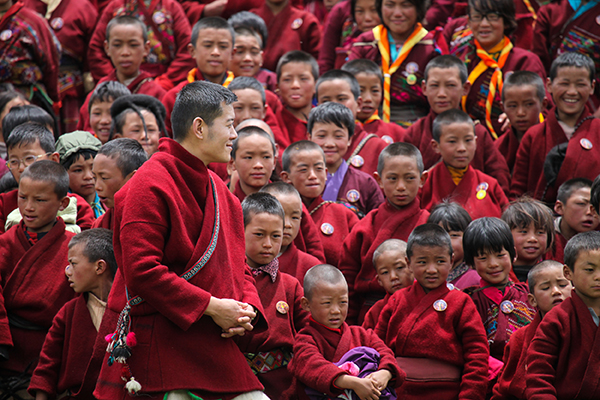
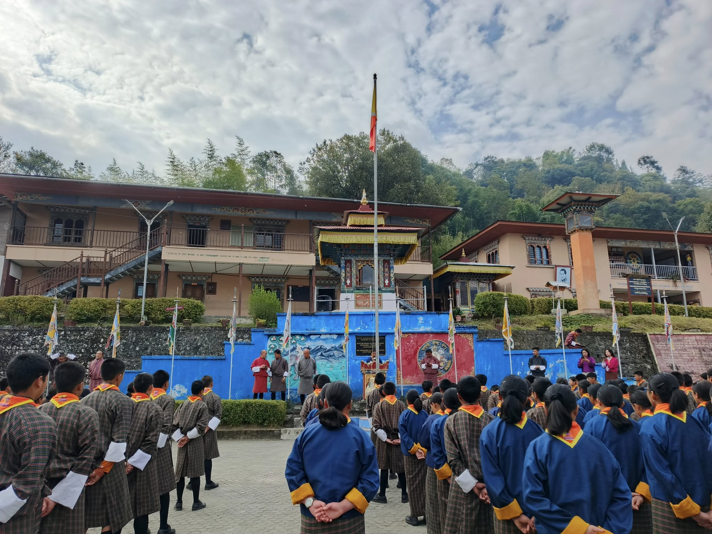
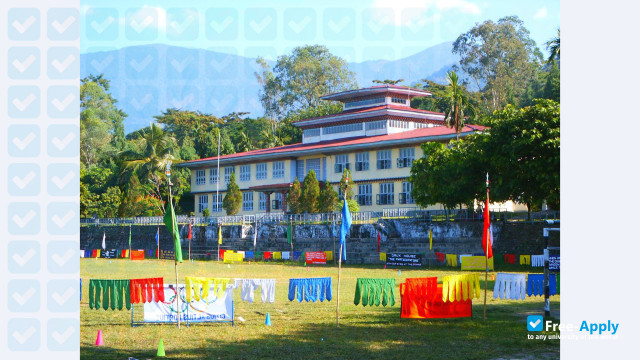

My Education Journey

Sakteng Lower Secondary School
This is where my learning journey began, building a strong foundation (class PP-8).

Dungtse Central School
Here I explored new subjects and developed interest in ICT (9-10).

Jigme Sherubling Central School
I gained confidence in academics and took part in co-curricular activities (11-12).

Samtse College of Education
Currently pursuing higher studies to prepare myself as an ICT educator (3rd year).